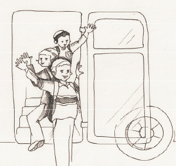

Jackie Will Also Go to a Jewish School
Mendy sat on the plane, learning Chitas. Suddenly, there was an announcement. “Please fasten your seatbelts. Due to a malfunction we must make an emergency landing.”

Boruch Hashem, the plane landed safely. Mendy, as a Chassidishe bachur, used the time to do mivtzaim, to put t’fillin on with those who hadn’t done so yet, to talk about the Rebbe and about the imminent Geula.
Another person used the time to circulate among the passengers, but for a different purpose. She was an older woman, not yet religious, who wanted people to sign to a demand that the airline compensate them for the delay. When she saw Mendy in action, she immediately recognized him as a Lubavitcher.
“If you are a Lubavitcher, I have a story for you,” she said. Mendy, of course, wanted to hear a story about the Rebbe. This is what she told him:
I went to the Rebbe a few times and experienced many miracles. I will tell you about one of them.
I live in the United States, far from New York. The shliach in our city is R’ Hecht, and we are in touch with him about everything Jewish.
I have three sons. Although we don’t live a religious lifestyle, it was important to us that our children get a Jewish education. So we did not send our two oldest children to public school but to yeshiva. Boruch Hashem, we were very pleased with the school and the education they received.
When our third and youngest son was ready for first grade, we had a big problem. Jackie was a delightful child but he was handicapped; he was born deaf. We did not know where to send him to school. On the one hand, we wanted a Jewish education and did not want to send him to public school. On the other hand, in yeshiva they taught in Hebrew and he was having a hard enough time with English. Aside from that, in public school there was a special education teacher and she had the training to deal with a situation like Jackie’s. In the yeshiva the staff had no training in dealing with this kind of unique situation.
We were very uncertain. Since R’ Hecht was our rabbi, we consulted with him. He said, “This is a tough question. I can’t tell you to send him to public school, but I understand that sending him to yeshiva is a problem. I advise you to ask the Rebbe.”
Although we lived far from New York, this was reason enough to make the effort and fly there. R’ Hecht arranged a meeting for us with the Rebbe.
We landed in New York in the middle of the night. The streets were dark and almost empty of people. We huddled in our coats to protect ourselves from the strong wind. We felt very excited about our upcoming meeting with the Rebbe. We prayed that we would leave the meeting strengthened and that the Rebbe would guide us.
We arrived at 770 and were surprised to see it looking like it was the middle of the day. Many people were waiting to see the Rebbe and who were saying T’hillim. We also opened our T’hillim and read from it.
Then it was our turn. We walked into the Rebbe’s room and felt an aura of holiness. It was a unique experience, one that cannot be adequately described in words. The Rebbe listened while we told him about our dilemma and indecision.
The Rebbe listened and then said, “I don’t believe in an education which is not Jewish.”
“What should we do about the problem our son has? How will he manage in a regular classroom with a language he does not know and with teachers who do not know how to teach the deaf?” we asked.
The Rebbe replied with one sentence that is etched in our memories and had a great impact on us. “Consider what the child will think on the first day of school when he sees his older brothers going on the bus to yeshiva while he goes to public school. How will he feel?”
We had tears in our eyes. We hadn’t thought of that at all. True. If he was the only one going to public school, he would feel singled out, different. He would certainly think: Poor me. Not only am I deaf, I cannot even go to a Jewish school.
These words penetrated deeply into our hearts, but the Rebbe hadn’t finished. He asked about the person who dealt with deaf children in the public school.
“She’s a woman from the Jewish community. We actually know her,” we said.
“If so,” said the Rebbe, “send the child to yeshiva and consult with her on a regular basis about how to handle him and how to help him progress.”
Before we left the Rebbe, he asked about our son’s medical problem and we told him the details. The Rebbe analyzed and explained the problem precisely as though he was a top doctor. He concluded by saying, “If, in the future, they will discover a way to operate and insert an implant that can help him, do it without any concern.”
At that time, nobody had dreamed about an operation like this, but we were sure that the day would come and it would happen.
We left the yechidus very excited and strengthened. It was clear to us that we would follow what the Rebbe said and it would all work out. We contacted that teacher and she was happy to help us. Jackie did well in school and was happy.
Till today, we have hanging in our home a picture of the three boys on the first day of school getting on the bus to yeshiva with big smiles on their faces.
And let’s not forget the happy ending that the Rebbe anticipated years in advance. Twenty years went by since that yechidus and an operation became possible that would help Jackie’s problem. We did it without any fear even though it was something new and untested. Of course, the operation was even more successful than anticipated and this is thanks to the Rebbe’s blessing.
Beis Moshiach (staff). "Jackie Will Also Go to a Jewish School." Beis Moshiach, no. 914 (February 6, 2014).